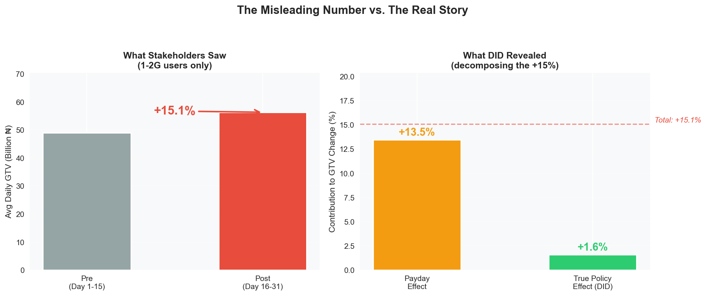
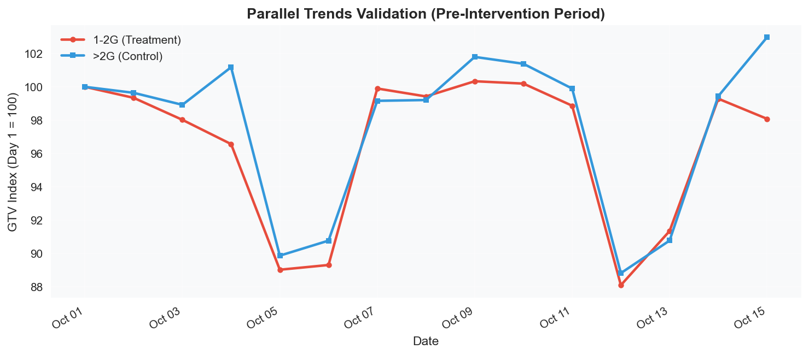
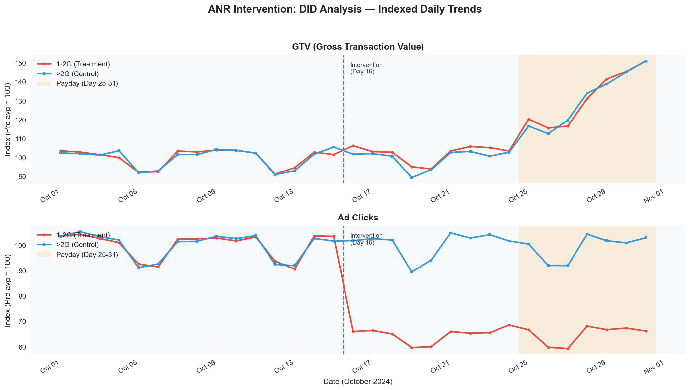
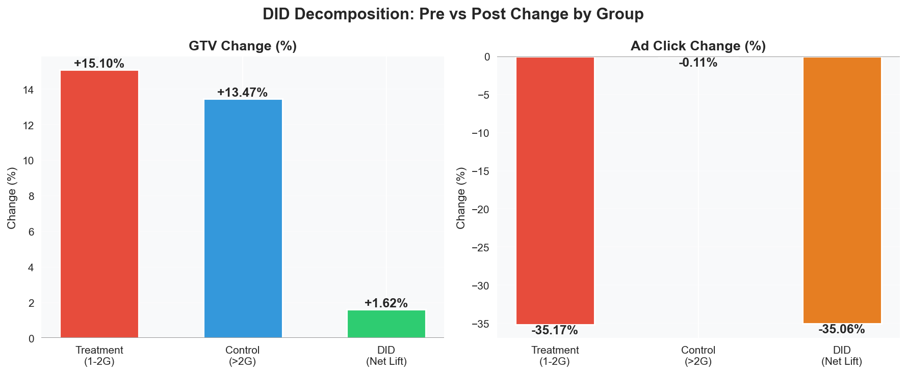
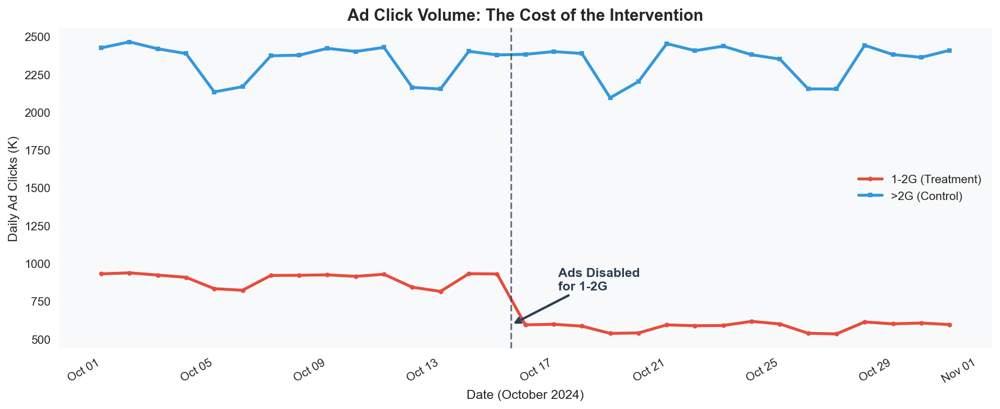

当 "+15% GTV" 只是海市蜃楼：用 DID 度量广告位策略调整的真实效果
角色： Data Analyst，移动支付 Fintech（尼日利亚市场） 工具： SQL (Hive/SparkSQL)、Python、Causal Inference (DID) 关键词： Difference-in-Differences, Quasi-Experiment, Confounding, Causal Inference, A/B Test 替代方案
摘要
我们的移动支付 App 在低内存手机上存在一个已知性能问题：支付成功跳转页上的高资源广告组件会导致 1-2 GB 设备频繁触发 ANR（Application Not Responding）。流量分发团队决定为这部分设备关闭特定高资源广告位以改善用户体验，但策略以全局配置方式上线，没有条件做 A/B Test。
策略上线两周后，业务方看到 1-2G 用户的 GTV 涨了 15%，认为策略效果显著。
我用 Difference-in-Differences (DID) 方法证明了：这 15% 的涨幅中，约 90% 是月底发薪日的季节性效应，策略本身带来的真实因果增量仅为 +1.6%——与此同时，受影响广告位的点击量下降了约 35%。
这个分析将一个"大胜利"的叙事，重新框定为一场需要审慎权衡的成本-收益讨论。
一、背景：支付成功页的 ANR 问题
业务背景
我们的 App 服务于尼日利亚数千万用户，其中大量用户使用 1-2 GB 内存的低端手机。这些设备资源紧张，而 App 在支付成功跳转页上加载的部分营销广告组件（Rich Media 类型）占用了较高内存。
问题链条
flowchart LR
A["特定高资源广告组件\n（支付成功跳转页）"] --> B["1-2G 手机\n内存压力"]
B --> C["ANR 触发\n（应用无响应）"]
C --> D["支付成功后\nApp 卡顿/崩溃"]
D --> E["用户信任受损\n后续交易意愿下降"]涉及的广告位是 pay_succ_rid_actransfer 和 pay_succ_rid_aatransfer——它们加载在支付成功后的跳转页上。也就是说，ANR 发生时交易本身已经完成，不会直接导致当笔交易失败。
但问题在于：用户刚刚完成付款、正等待确认结果的敏感时刻，App 突然崩溃——这会损害用户对平台的信任感。
为什么值得关注
- 1-2G 用户占活跃用户约 33%（DAU 占比显著）
- ANR 虽然不影响当笔交易，但在付款后最敏感的时刻发生崩溃，会引发用户焦虑（"钱到底扣了没有？"）
- 反复出现的卡顿体验会抑制后续交易意愿，并加速低端机用户流失（在尼日利亚市场，重新下载 App 的成本不低：流量贵、存储紧张）
二、策略调整：关闭特定广告位
我们做了什么
流量分发团队在月度第 16 天通过服务端配置变更，对 1-2G 设备做了针对性调整：
- 1-2G 设备： 关闭支付成功跳转页上两个特定高资源广告位（
pay_succ_rid_actransfer、pay_succ_rid_aatransfer，共 21 个 ad_id），其余广告位正常展示 - >2G 设备： 无任何变化，所有广告正常展示
为什么没做 A/B Test？
这次调整以服务端全局配置的方式上线，没有条件进行随机实验：
| 挑战 | 细节 |
|---|---|
| 全局配置 | 服务端按设备内存统一生效，没有设备级别的随机分流基础设施 |
| 高方差 | GTV 方差极大；50/50 分流需要较长时间窗口才能达到统计显著性 |
| 事后评估 | 策略已先行上线，我的任务是事后评估其因果效应 |
我的挑战： 策略已经全量上线，没有随机对照组——如何从复杂的市场环境中隔离出这次配置变更的因果效应？
三、误导性的数字：业务方庆祝 "+15%"
策略上线两周后，业务团队做了一个简单的前后对比（1-2G 用户）：
| 时段 | 日均 GTV（₦ 十亿） |
|---|---|
| 干预前（第 1-15 天） | 48.9 |
| 干预后（第 16-31 天） | 56.3 |
| 变化 | +15.1% |
叙事迅速形成："关掉那些广告位效果明显，直接释放了 15% 的 GTV 增量！"

我为什么不买账
我知道一件前后对比无法解释的事情：月底发薪日效应（Payday Effect）。
在尼日利亚（以及许多新兴市场），工资发放集中在每月 25-31 号。这会在所有用户中产生一波巨大的、可预测的交易量飙升——与设备内存无关。
flowchart TD
subgraph decomposition ["这 15% 并非全是策略效果"]
A["观测到：1-2G GTV +15%"] --> B{"什么驱动了增长？"}
B -->|"约 90%"| C["发薪日效应\n（第 25-31 天自然飙升）"]
B -->|"约 10%"| D["真实策略效果\n（广告位调整带来的增量）"]
end策略生效的时间窗口（第 16-31 天）与发薪日时段（第 25-31 天）完全重叠。任何朴素的前后对比，都会把策略效果和季节性效应混为一谈。
四、分析框架：Difference-in-Differences (DID)
为什么选择 DID？
Difference-in-Differences 是一种准实验方法，专门用于无法进行随机实验时估计因果效应。它的核心思想是找到一个天然对照组——经历了相同外部环境，但没有被干预。
| 分组 | 干预前（第 1-15 天） | 干预后（第 16-31 天） | 角色 |
|---|---|---|---|
| 1-2G 设备 | 正常展示所有广告 | 特定高资源广告位被关闭，其余正常 | Treatment |
| >2G 设备 | 正常展示所有广告 | 无变化，所有广告正常展示 | Control |
核心公式：
对照组的变化量捕获了反事实（Counterfactual）——即如果不做任何干预，1-2G 用户的 GTV 会如何变化。将其减去后，我们就能隔离出纯粹的策略效果。
关键假设：Parallel Trends（平行趋势）
DID 要求两组在不受干预的情况下会遵循相同的趋势。我通过检验干预前时段来验证这一假设：

在第 1-15 天（干预发生之前），两组的 GTV 指数几乎完美同步——周末一起下跌，工作日一起回升。这验证了 Parallel Trends 假设成立，>2G 用户可以作为有效的 Control Group。
五、核心结果：从噪声中分离信号
DID 2×2 矩阵
| 干预前（第 1-15 天） | 干预后（第 16-31 天） | Δ 变化率 | |
|---|---|---|---|
| Treatment（1-2G） | ₦48.9B/天 | ₦56.3B/天 | +15.1% |
| Control（>2G） | ₦126.7B/天 | ₦143.7B/天 | +13.5% |
| DID（Net Lift） | +1.6% |
全景图

GTV 面板（上）解读：
- 第 1-15 天： 两组走势完全同步（Parallel Trends ✓）
- 第 16-24 天： 轻微分叉，但肉眼难以区分
- 第 25-31 天（发薪日区域，阴影部分）： 两条线一起暴涨——这就是让朴素对比产生 15% 假象的混淆因素
广告点击面板（下）解读：
- 第 16 天： 1-2G 的广告点击量出现显著下跌（被关闭的广告位约占总量三分之一）——策略精准生效
- >2G： 完全平稳——确认配置变更只作用于目标人群
DID 分解

| 指标 | Naive（仅看 1-2G） | DID（Net Lift） | 解读 |
|---|---|---|---|
| GTV | +15.1% | +1.6% | 真实因果增量比朴素数字小了 10 倍 |
| Ad Click | -35.2% | -35.1% | 与朴素值几乎一致——证实这是纯策略效应，不受季节性影响 |
六、权衡：这笔账到底值不值？
DID 分析把讨论焦点从"我们赚了多少？"重新框定为"我们付出了什么代价？"
广告位关闭的代价

| 指标 | 调整前 | 调整后 | 影响 |
|---|---|---|---|
| 1-2G 日均广告点击 | ~898K | ~582K | -35%（-316K/天） |
| 1-2G 日均 GTV（因果增量） | ₦48.9B | ~₦49.7B | +1.6%（+₦0.8B/天） |
最终建议
核心结论
此次策略调整缓解了支付成功页的 ANR 问题，并带来了微弱的 GTV 改善（+1.6%），但代价是被关闭广告位约 35% 的点击量损失。长期建议不是永久关闭这些广告位，而是用轻量化方案替换重型广告组件（静态 Banner、懒加载素材），在维持低内存设备稳定性的同时恢复广告收入。
这个分析将后续路线图从"保持广告位关闭"转向了"让广告组件变轻"。
七、SQL 实现
DID 2×2 矩阵可以直接在 SQL 中计算（兼容 Hive / SparkSQL）：
查询一：生成 2×2 DID 矩阵
WITH did_matrix AS (
SELECT
device_memory,
CASE WHEN day < 16 THEN 'Pre' ELSE 'Post' END AS period,
COUNT(*) AS n_days,
ROUND(AVG(gtv), 0) AS avg_daily_gtv,
ROUND(AVG(ad_click), 0) AS avg_daily_ad_click,
SUM(gtv) AS total_gtv,
SUM(ad_click) AS total_ad_click
FROM anr_simulated
GROUP BY
device_memory,
CASE WHEN day < 16 THEN 'Pre' ELSE 'Post' END
)
SELECT * FROM did_matrix
ORDER BY device_memory, period DESC;
查询二：一行输出 DID 结论
WITH did_matrix AS (
SELECT
device_memory,
CASE WHEN day < 16 THEN 'Pre' ELSE 'Post' END AS period,
AVG(gtv) AS avg_gtv,
AVG(ad_click) AS avg_ad
FROM anr_simulated
GROUP BY 1, 2
)
SELECT
ROUND(100.0 * (
MAX(CASE WHEN device_memory='1-2G' AND period='Post' THEN avg_gtv END) /
MAX(CASE WHEN device_memory='1-2G' AND period='Pre' THEN avg_gtv END) - 1
), 2) AS naive_gtv_pct,
ROUND(100.0 * (
MAX(CASE WHEN device_memory='>2G' AND period='Post' THEN avg_gtv END) /
MAX(CASE WHEN device_memory='>2G' AND period='Pre' THEN avg_gtv END) - 1
), 2) AS control_gtv_pct,
ROUND(100.0 * (
MAX(CASE WHEN device_memory='1-2G' AND period='Post' THEN avg_gtv END) /
MAX(CASE WHEN device_memory='1-2G' AND period='Pre' THEN avg_gtv END)
- MAX(CASE WHEN device_memory='>2G' AND period='Post' THEN avg_gtv END) /
MAX(CASE WHEN device_memory='>2G' AND period='Pre' THEN avg_gtv END)
), 2) AS did_gtv_net_lift_pct
FROM did_matrix;
八、方法论讨论与局限性
为什么选 DID 而非其他方法？
| 方法 | 是否考虑过？ | 理由 |
|---|---|---|
| A/B Test | 首选方案 | 不可行——全局配置无法设备级随机分流 + GTV 高方差需要长窗口 |
| DID | 最终采用 | 设备内存天然划分 Treatment/Control；Parallel Trends 假设成立 |
| Regression Discontinuity | 考虑过 | 没有清晰的 Running Variable（天数不够平滑） |
| Synthetic Control | 考虑过 | 对于两组明确定义的对比而言过于复杂；DID 可解释性更强 |
| CUPED | 考虑过 | 适用于 A/B Test 中的方差缩减，此场景不适用 |
局限性
- 无个体层面随机化 — DID 识别的是 ATT（Average Treatment Effect on the Treated），而非 ATE
- 干预后时间窗较短 — 仅 16 天；长期效果（用户留存、重新激活）未被捕获
- 潜在溢出效应 — 如果 1-2G 用户因不再看到广告而改变了行为，进而影响 >2G 用户的指标，则 Control Group 会被污染（可能性低但存在）
- 发薪日效应的形状假设 — 发薪日对两组的影响幅度可能不完全一致；我假设按比例相似，Parallel Trends 支持这一点但无法完全保证
九、反思：我是如何构建这个故事的
从零散笔记到完整的案例研究
这个项目最初只是一堆凌乱的工作记录——SQL 查询、数据透视表、以及一句感慨："ANR 这件事这么对比其实参考价值不大……到月底本身就有流量高峰期"。
那句沮丧的观察，实际上就是整个 DID 分析的种子——我意识到了问题所在（发薪日混淆），接下来需要的只是一个严谨的框架来证明它。
以下是我将零散工作产出转化为结构化叙事的过程：
flowchart TD
A["原始工作产出\n（SQL、透视表、群聊讨论）"] --> B["识别核心张力：\n业务方相信 +15%，\n但我知道存在混淆"]
B --> C["选择分析框架：\nDID 分离信号与噪声"]
C --> D["生成可复现的证据：\n仿真数据集 + 数学验证"]
D --> E["构建叙事弧：\n钩子 - 复杂化 - 揭示 - 权衡"]
E --> F["Portfolio 级案例研究\n配合清晰的可视化"]我使用的 Storytelling 原则
1. 用令人震惊的数字开头，然后拆解它。
"+15%" 就是钩子。它之所以引人入胜，是因为它是错的——而展示它为什么错，才能体现分析的深度。
2. 让混淆因素变得"肉眼可见"。
发薪日效应在这个故事里不是抽象的统计概念——它是一个具体的、人尽皆知的市场行为。任何在 Fintech 或新兴市场工作过的人都会立刻产生共鸣。
3. 用 Control Group 制造"顿悟时刻"。
当你展示 >2G 用户在没有任何干预的情况下也涨了 13.5%，听众会瞬间意识到策略几乎没有撬动什么。这就是叙事的转折点。
4. 不隐藏代价。
广告点击量 -35% 不是脚注——它是第二个重要发现。分析的完整性取决于你是否呈现了账本的两面。这展示的是商业成熟度，而非仅仅是技术能力。
5. 以建议结尾，而不仅仅是发现。
"让广告变轻"是可执行的。它表明我不只是在做数学——而是将分析连接回了产品决策。
作为 Portfolio 案例，这个项目展示了什么？
| 维度 | 本案例展示的能力 |
|---|---|
| 因果推断思维 | 在无随机化条件下识别并处理 Confounding |
| 方法选型 | 在朴素方法（前后对比）和复杂方法（Synthetic Control）之间选择最合适的 DID |
| 挑战业务认知 | 用严谨证据有策略地反驳 "+15%" 的叙事 |
| 商业判断力 | 将结果框定为权衡（GTV vs. 广告收入），而非单一数字 |
| 沟通表达 | 将统计概念翻译为直观的、可视化的论证 |
附录：仿真数据集生成说明
本案例使用的数据集为仿真数据（保护商业机密），但经过精确的数学校准，可完美复现真实分析中的 DID 数学关系。
核心校准参数
| 参数 | 取值 | 作用 |
|---|---|---|
PAYDAY_BOOST_GTV |
30.9% | 发薪日 GTV 涨幅（线性爬坡，均值 30.9%），作用于所有用户 |
TREATMENT_GTV |
+1.32% | 关闭广告带来的真实 GTV 因果增量（仅作用于 1-2G，干预后） |
TREATMENT_AD |
-35% | 关闭特定广告位导致的广告点击量下降（被关闭位约占总量 1/3） |
WEEKEND_DIP |
-7~10% | 自然的周末活跃度下降（DAU、GTV、广告点击） |
NOISE_σ |
0.8~1.2% | 日级随机噪声，增加数据真实感 |
参数推导
上述参数由以下目标方程组联立求解：